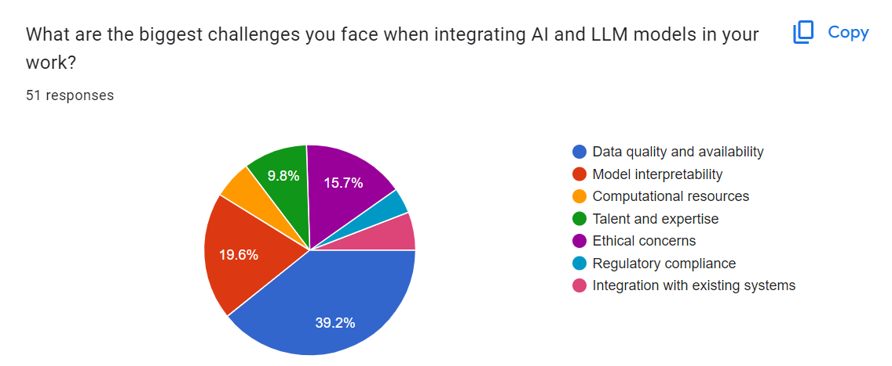
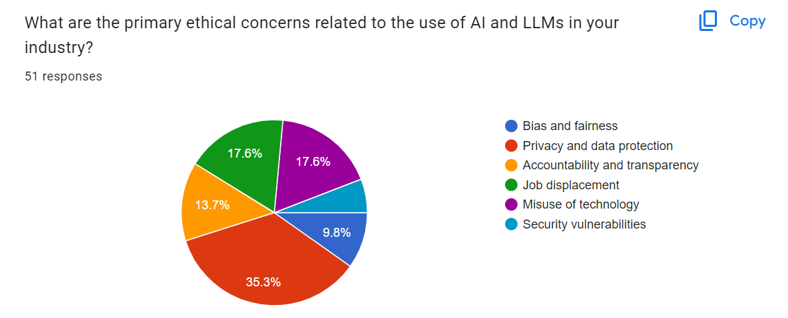
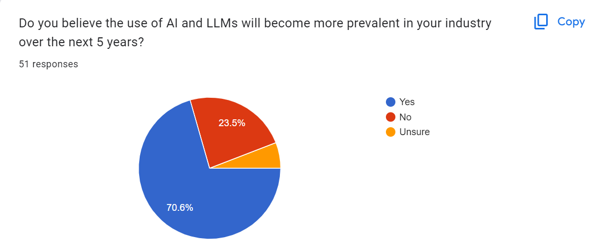
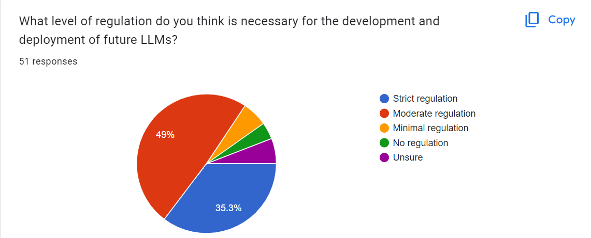

AI LLMs
Large language models (LLMs) are a category of foundation models trained on immense amounts of data making them capable of understanding and generating natural language and other types of content to perform a wide range of tasks.

In the 1960s, the first chatbots like ELIZA were created, utilizing simple rule-based systems to simulate human conversation. These early AI models relied heavily on pre-defined scripts and lacked the ability to understand context or learn from interactions.
2. Rise of Recurrent Neural Networks (1980s)-
Recurrent Neural Networks (RNNs) emerged in the 1980s, introducing a new way for AI systems to handle sequential data. RNNs could process input sequences of variable length, making them suitable for tasks like language modeling and time series prediction.
3. Rise of Long Short Term Memory (1990s)-
In the 1990s, Long Short-Term Memory (LSTM) networks were developed to address the limitations of traditional RNNs, particularly their difficulty in learning long-term dependencies. LSTMs improved the handling of sequential data by incorporating mechanisms to retain information over extended periods.
4. Gated Recurrent Network (2010s)-
The 2010s saw the development of Gated Recurrent Units (GRUs), a simpler and more efficient alternative to LSTMs. GRUs offered comparable performance with fewer parameters, making them a popular choice for various natural language processing tasks.
5. Rise of Attention Mechanism (2014)-
The introduction of the attention mechanism in 2014 revolutionised the way neural networks processed sequential data. Attention mechanisms allowed models to focus on specific parts of the input sequence, enhancing their ability to capture relevant information and improving performance on tasks like machine translation.
6. The invention of Transformers Architecture (2017)-
In 2017, the transformer architecture was introduced, marking a significant breakthrough in AI. Unlike RNNs and LSTMs, transformers relied entirely on attention mechanisms, enabling parallel processing of data and leading to substantial improvements in efficiency and accuracy for tasks such as language translation and text generation.
7. Emergence of Large Language Models (2018-onwards)-
From 2018 onwards, large language models (LLMs) like GPT-3 and BERT emerged, showcasing unprecedented capabilities in understanding and generating human language. These models, built on transformer architecture, have been trained on vast amounts of data and have demonstrated remarkable proficiency across a wide range of natural language processing tasks.

Usage of LLMs
1. Search-Search engines like Google and Bing already use LLMs to offer better user results. Search Engines achieve this by understanding the user’s search intent and using that information to provide the most relevant & direct results.
2. Generate Content -
i. Content creation: LLMs can create new content for blogs, social media, and other digital platforms. This could mean using existing content as a starting point and making new text related to the original content, or it could mean making new content based on a set of keywords or other input.
ii. Dialogue generation: LLMs can make chatbots, virtual assistants, and other conversational agents talk to each other. This could mean coming up with answers to user questions based on a knowledge base or database of solutions or coming up with a new dialogue that fits the needs or preferences of a specific user.
iii. Storytelling: LLMs can be used to develop new stories or stories with a particular theme or prompt. This could mean making short stories or longer works of fiction, or it could mean making stories that are geared toward one specific audience or goal.
iv. Feed for TTS: LLMs can make text feed in different languages that sound natural. This ability can make the TTS system more robust and automated.
v. Content augmentation: LLMs can add to existing content by making more context — or detail-rich text. This could mean adding to articles, reports, or other documents that are already out there or making summaries or abstracts that provide a high-level overview of the content.
3.Extraction from data sets: LLMs have the capability to extract information from large amounts of unstructured data, such as posts on social media or customer reviews.
4.Expand the content: LLMs can expand on existing content by generating additional paragraphs, sentences, or ideas. For expansion, LLM can use techniques such as semantic similarity and text generation to produce new content related to the original text.
5.Market Research and Competitor Analysis: When making a content strategy or launching a new product, it’s essential to research the market. The information gathered often determines what is written about and how it is told. Language models like LLMs can help get and look at the correct data for market research and competitor analysis.
We have also conducted a survey to understand people's view on LLMs. Totally we have received 51 responses. Here are the stats: -




Forms Link